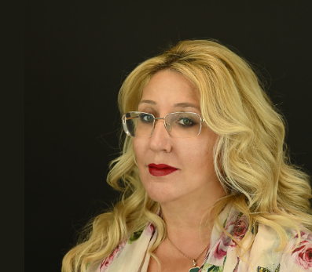

Legal advices and assistance of the
highest standards.
Enterprise of legal services production, taking actions adapted to Bulgarian and foreign client’s demand.
Our History
Our
Law office “Iotov and Co” offers legal advices and assistance of the highest ethical and professional standards.
Since 1991 the Senior partners are providing legal services. Immediately after the changes of the Bar Act in 2005 Law office "Iotov and Co" was established as a company. Law office "Iotov and Co" successfully took its key place on the Bulgarian legal market with a registered trademark for legal services “JUSTUS”. Today, the office includes 5 lawyers, 1 legal adviser, and 2 paralegal.
Our law office culture is that of an enterprise of services production, which are taking actions adapted to Bulgarian and foreign client’s demand.
Branch 1
Sofia, 1000, 39 Gen. Parensov str., fl. 1, office 1,
managed by Senior partner Hristo Iotov
History
We are committed to responding to the needs of our clients, building on a conviction that expedience and practical usefulness are just as important
in giving a good deal as a comprehensive legal analysis. We always provide our services to our client's specific, practical needs. Law office “Iotov and Co”
has developed specializing knowledge in the field of civil, administrative, and tax law, including international commercial and tax laws legislations, as well as in litigation representation.
Our law office culture is that of an enterprise of services production, which are taking actions adapted to Bulgarian and foreign client’s demand.
Branch 2
Sofia, 1700, 6 Prof. Georgi Bradistilov str., fl. 2, office 2.2,
managed by Senior partner Vania Iotova
Meet Our Team
Hristo Iotov
Founder and Senior Partner
Attn. Hristo Iotov is the founder and Senior Partner in Law office
“Iotov and Co”. He has been practicing law since 1968. He is a hard-working professional,
with deep knowledge in Bulgarian legislation and long experience in providing services for
Bulgarian and foreign clients in the commercial, real estate, and administrative field of law.

Vania Iotova
Founder and Senior Partner
Attn. Vania Iotova is a founder and Senior Partner in Law office “Iotov and Co”. She has
been practicing law since 1997. Vania is a business-oriented professional, with studies in Law, Economics,
and Accountancy, over 15 years of practice in the Bulgarian, European, and World real estate markets, and
over 20 years in the legal field. She is actively involved in different lawsuits and advising as an
independent lawyer different NPO, Banks, and Cultural Institutions.

Kiril Kotsopulos
Partner
Attn. Kiril Kotsopulos has been practicing law since 2001. He is a devoted professional
with studies in Business, Real Estate, and Intellectual Property Law, with detailed knowledge in Bulgarian
and European legislation. He has over 20 years of practice in commercial, insolvency, legal, and enforcement
proceedings as well as litigation. He has been actively involved in numerous company establishments, mergers,
other company transformations, and acquisitions. A great part of his expertise consists of corporate and private
litigation.

Rositsa Iotova
Founder and Partner
Attn. Rositsa Iotova is a founder and Partner in Law office “Iotov and Co”. She has been
practicing law since 2000. Rositsa is a business and administrative-oriented professional, with detailed
knowledge of Bulgarian and European legislation. She has more than 20 years of practice in the field of
real estate, commercial, inheritance, and administrative law. She has been actively involved in raising
capital for companies and their business affairs.
Zoya Ivanova
Attorney at law
Attn. Zoya Ivanova is part of the team of Law office “Iotov and Co” for numerous years.
She has been practicing law since 1975. Having detailed knowledge in the field of penal and administrative
law and more than 45 years of practice in preliminary investigations and lawsuits, she proves the principle
"Innocent until proven guilty". But also, is a passionate defender of crime victims.

Dilyana Rangelova
Legal Adviser
Dilyana Rangelova is the newest part of the team of Law office “Iotov and Co”. She has
been practicing law since 2011. Having detailed knowledge in the field of Bulgarian Civil and Administrative
law and more than 10 years of practice in the field of legal consultations, legal due diligence, and court
mediation she is a great replenishment in our office.
Kamelia Stefanova
Paralegal assistant
Kamelia Stefanova is an assistant and part of the team of Law office “Iotov and Co” since the
begging . She has experience in communication and relationships with clients and external suppliers. Her
responsibilities are to coordinate and organize meetings with clients, support the work process of the team by
technical processing and preparation of a number of legal documents.
Services
(PROPERTY) REAL ESTATE LAW
COMMERCIAL AND CORPORATIVE LAW
CIVIL AND COMMERCIAL LITIGATION
TAX LAW
FINANCIAL ADVICES
INTELLECTUAL PROPERTY
PENAL LAW
PENAL LAW
Our Law Office also provides services in the field of the Penal Law, and namely:
-legal protection and representation of natural persons and legal entities expressed in litigation before the competent bodies – Ministry of the Internal Affairs, the Prosecutor’s office, the Court;
-legal support, expressed in litigation in pre-trial proceedings and court cases, initiated against people accused for offenses, including proceedings initiated against Managers of Companies, declared in bankruptcy;
-appealing of the acts and decrees of the court and the prosecutor’s office before higher authorities.
-legal protection and representation of natural persons and legal entities expressed in litigation before the competent bodies – Ministry of the Internal Affairs, the Prosecutor’s office, the Court;
-legal support, expressed in litigation in pre-trial proceedings and court cases, initiated against people accused for offenses, including proceedings initiated against Managers of Companies, declared in bankruptcy;
-appealing of the acts and decrees of the court and the prosecutor’s office before higher authorities.
Our Values
Our
Values
What we believe in
Our law office culture is that of an enterprise of services
production, taking actions adapted to Bulgarian and foreign client’s demand.
We are committed to responding to the needs of our clients, building on a conviction that expedience and practical usefulness are just as important in giving a good deal as a comprehensive legal analysis. We always provide our services to our client's specific, practical needs. Law office “Iotov and Co” has developed specializing knowledge in the field of civil, administrative, and tax law, including international commercial and tax laws legislations, as well as in litigation representation.
We are committed to responding to the needs of our clients, building on a conviction that expedience and practical usefulness are just as important in giving a good deal as a comprehensive legal analysis. We always provide our services to our client's specific, practical needs. Law office “Iotov and Co” has developed specializing knowledge in the field of civil, administrative, and tax law, including international commercial and tax laws legislations, as well as in litigation representation.
Our Location
Branch 1
Sofia, 1000, 39 Gen. Parensov str., fl. 1, office 1,
managed by Senior partner Hristo Iotov Phone number: +3592/980 46 66 (Bulgaria)
View on map
View on map
Branch 2
Sofia, 1700, 6 Prof. Georgi Bradistilov str., fl. 2, office 2.2,
managed by Senior partner Vania IotovaPhone number: +359 888 221 104 (Bulgaria)
View on map
View on map